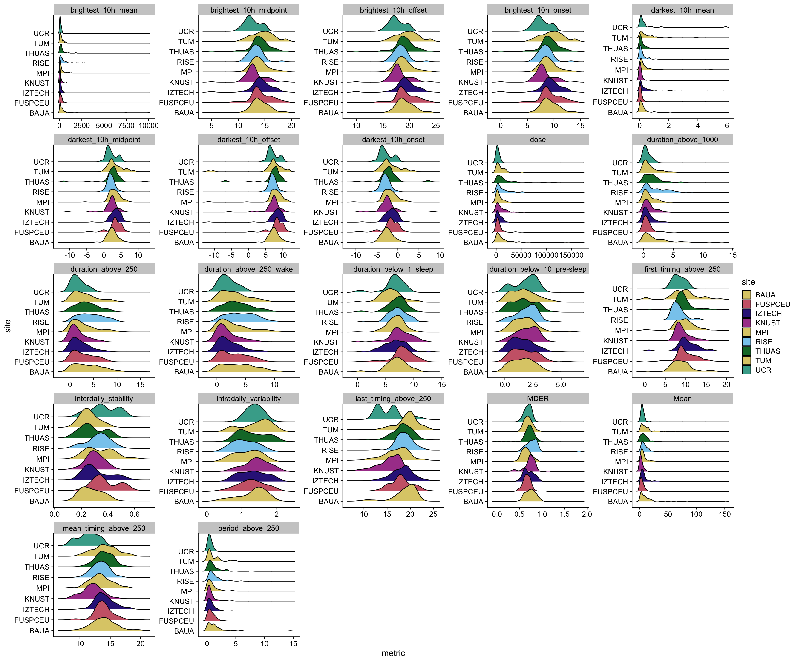
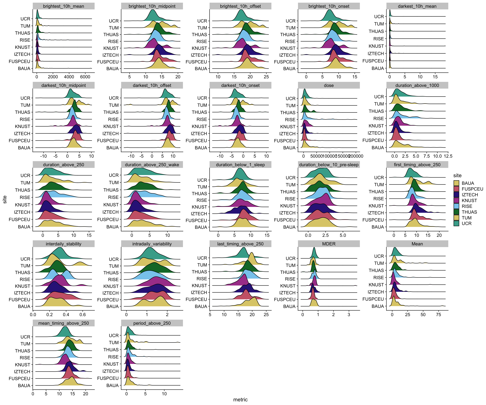

Personal light exposure: Metric preparation
Individual, behavioural, and environmental determinants of personal light exposure in daily life: a multi-country wearable and experience-sampling study
Preface
This script works off the data preprocessing, to produce one dataframe containing all metrics in numeric form, ready for analysis.
How metrics must be interpreted
- Timing and duration-based metrics are converted to decimal-hours.
- In the case of timing they mean decimal-hours from midnight.
- The
darkest_10hare centered on midnight, i.e., values before midnight are negative. -
meanvalue metrics used a geometric mean (withlog_zero_inflated()).
For a single, unnested dataframe of metrics execute:
metrics_glasses |> unnest(data)Setup
Preparation
Context
Prepare photoperiods
photoperiod_daily <-
light_glasses_processed2 |>
group_by(site, Id, Date) |>
summarize(photoperiod = mean(photoperiod, na.rm = TRUE) |> as.numeric(),
.groups = "drop_last")
photoperiod_participant <-
light_glasses_processed2 |>
group_by(site, Id) |>
summarize(photoperiod = mean(photoperiod, na.rm = TRUE) |> as.numeric(),
.groups = "drop_last")
photoperiod_daily_chest <-
light_chest_processed2 |>
group_by(site, Id, Date) |>
summarize(photoperiod = mean(photoperiod, na.rm = TRUE) |> as.numeric(),
.groups = "drop_last")
photoperiod_participant_chest <-
light_chest_processed2 |>
group_by(site, Id) |>
summarize(photoperiod = mean(photoperiod, na.rm = TRUE) |> as.numeric(),
.groups = "drop_last")Prepare contextual info
demographics <-
demographics |>
select(site, Id, age, sex, gender, employment_status)
context <-
tibble(site = names(melidos_cities),
country = unname(melidos_countries),
tz = unname(melidos_tzs),
city = unname(melidos_cities),
) |>
left_join(
melidos_coordinates |> map(enframe) |> list_rbind(names_to = "site") |> pivot_wider() |> rename(lat = `1`, lon = `2`),
by = "site"
)
demographics <-
demographics |>
left_join(context, by = join_by("site"))Metrics
In this section, we will combine all the metrics into one data-frame
Prepare participant metrics
metrics_glasses <-
metric_glasses_participant |>
left_join(demographics, by = c("site", "Id")) |>
left_join(photoperiod_participant, by = c("site", "Id")) |>
pivot_longer(c(interdaily_stability, intradaily_variability), names_to = "name", values_to = "metric") |>
ungroup() |>
nest(.by = name) |>
mutate(type = "participant")
metrics_chest <-
metric_chest_participant |>
left_join(demographics, by = c("site", "Id")) |>
left_join(photoperiod_participant_chest, by = c("site", "Id")) |>
pivot_longer(c(interdaily_stability, intradaily_variability), names_to = "name", values_to = "metric") |>
ungroup() |>
nest(.by = name) |>
mutate(type = "participant")Prepare participant-day metrics
metrics_glasses <-
rbind(
metrics_glasses,
metric_glasses_participantday |>
#converting datetimes to times
Datetime2Time() |>
mutate(
#converting times and durations to decimal hours
across(c(where(hms::is_hms), where(is.duration)),
\(x) as.numeric(x) / 60 / 60),
#centering nighttime variables on midnight
across(
c(darkest_10h_offset, darkest_10h_onset, darkest_10h_midpoint),
\(x) ifelse(x > 12, x - 24, x)
)
) |>
left_join(demographics, by = c("site", "Id")) |>
left_join(photoperiod_daily, by = c("site", "Id", "Date")) |>
pivot_longer(c(Mean:duration_above_250_wake), names_to = "name", values_to = "metric") |>
ungroup() |>
nest(.by = name) |>
mutate(type = "participant-day")
)
metrics_chest <-
rbind(
metrics_chest,
metric_chest_participantday |>
#converting datetimes to times
Datetime2Time() |>
mutate(
#converting times and durations to decimal hours
across(c(where(hms::is_hms), where(is.duration)),
\(x) as.numeric(x) / 60 / 60),
#centering nighttime variables on midnight
across(
c(darkest_10h_offset, darkest_10h_onset, darkest_10h_midpoint),
\(x) ifelse(x > 12, x - 24, x)
)
) |>
left_join(demographics, by = c("site", "Id")) |>
left_join(photoperiod_daily_chest, by = c("site", "Id", "Date")) |>
pivot_longer(c(Mean:duration_above_250_wake), names_to = "name", values_to = "metric") |>
ungroup() |>
nest(.by = name) |>
mutate(type = "participant-day")
)types <- read_excel("data/metric_types.xlsx")metrics_glasses <-
metrics_glasses |>
unnest(data) |>
mutate(across(c(site, Id, country, city, Date), factor)) |>
nest(data = -c(name, type)) |>
left_join(types, by = "name")
metrics_chest <-
metrics_chest |>
unnest(data) |>
mutate(across(c(site, Id, country, city, Date), factor)) |>
nest(data = -c(name, type)) |>
left_join(types, by = "name")Distributional characteristics
metrics_glasses |>
unnest(data) |>
ggplot(aes(x=metric)) +
geom_density_ridges(aes(y=site, fill = site))+
facet_wrap(~ name, scales = "free") +
scale_fill_manual(values = melidos_colors) +
theme_cowplot()Warning: Removed 293 rows containing non-finite outside the scale range
(`stat_density_ridges()`).
ggsave("figures/exploration/metric_distribution_glasses.pdf", width = 18, height = 15)Warning: Removed 293 rows containing non-finite outside the scale range
(`stat_density_ridges()`).metrics_chest |>
unnest(data) |>
ggplot(aes(x=metric)) +
geom_density_ridges(aes(y=site, fill = site))+
facet_wrap(~ name, scales = "free") +
scale_fill_manual(values = melidos_colors) +
theme_cowplot()Warning: Removed 365 rows containing non-finite outside the scale range
(`stat_density_ridges()`).
ggsave("figures/exploration/metric_distribution_chest.pdf", width = 18, height = 15)Warning: Removed 365 rows containing non-finite outside the scale range
(`stat_density_ridges()`).